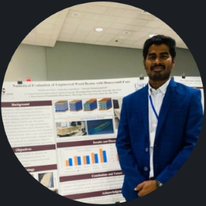
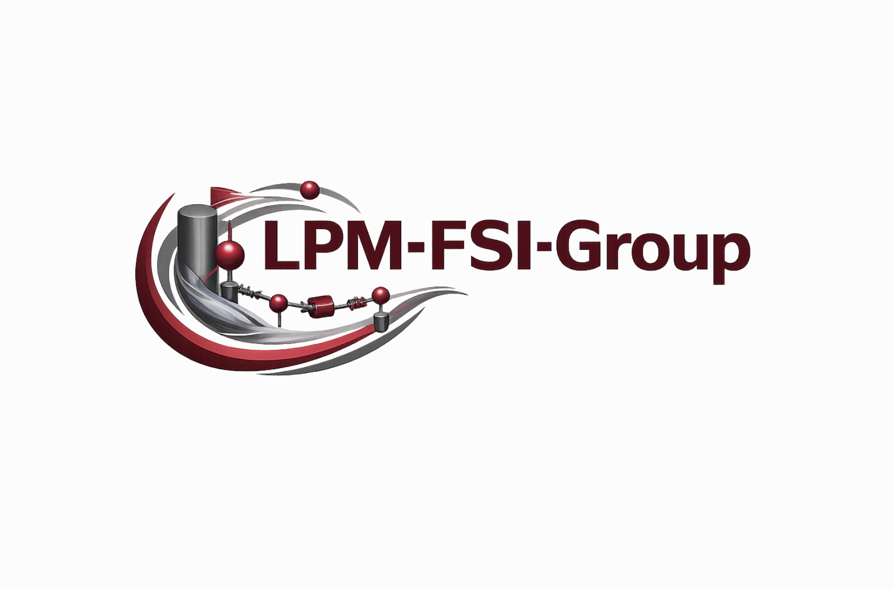
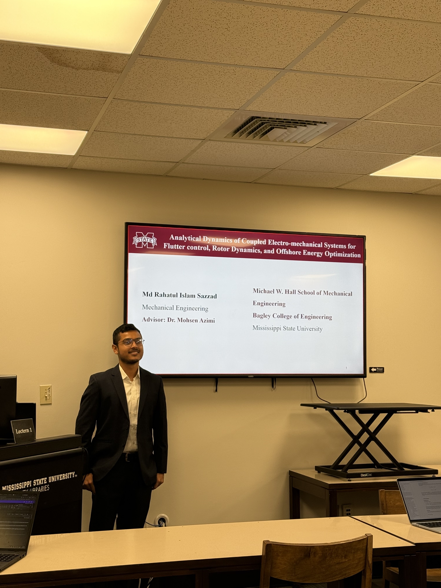

PhD Student
Manikanta Thati
Mechanical Engineering
Research: fluid-structure interaction, aeroelasticity, lumped-parameter modeling, high-difelity CFD, flutter, and vortex-induced vibrations.

The LPM-FSI Group website is currently under development. Some sections may be incomplete or temporarily unavailable.
LPM-FSI is a hybrid analytical–computational framework developed for modeling, simulation, and analysis of distributed-mass systems and their interaction within coupled multiphysics systems.
The framework combines governing-equation-based modeling, computational fluid dynamics, structural dynamics, analytical stability analysis, and high-performance computing to investigate aerodynamic and hydrodynamic loading, thermal effects, vibration, stability, and post-integration behavior, with particular emphasis on expanding analytical stability criteria for integrated multiphysics systems. Applications include renewable energy, offshore infrastructure, and propulsion systems in aerial, naval, and marine vehicles.
Learn More About Our Research
LPM–FSI method replicating the Turek-Hron benchmark: View the benchmark paper
Project: Interdisciplinary Advancing Workforce Skilled in Analytical/Numerical Fluid-Structure Interaction Analysis in Multi-Physics Systems
Award #2535453 | $795,000 | Start Spring 2027
Principal Investigator: Mohsen Azimi
Graduate Student Interested in any of the following discipline are encouraged to apply.
Mechnical Engineering - Dynamic-system modeling, multibody dynamics, mechanical vibration, linear and nonlinear dynamics, and parametric instabilities.
Aerospace Engineering - High-fidelity CFD, aerodynamic loading, aeroelasticity, and flutter analysis.
Electrical Engineering - Modeling and simulation of electric machines, power-electronics converters and control systems, and power-system/grid dynamics.
Civil Engineering - Structural and thermal modeling, lumped-parameter representation, structural dynamics, and base excitation.
Ocean Engineering - Hydrodynamic loads, added mass, wave excitation and dynamic response of floating structures.
Computational Engineering - Numerical implementation of coupled multiphysics models, numerical methods and algorithm development, high-performance computing, and numerical verification and convergence analysis.
Principal Investigator
Assistant Professor of Mechanical Engineering
As Principal Investigator, Dr. Mohsen Azimi provides the strategic direction for the LPM-FSI Group, defines research priorities, and oversees the planning and execution of individual and collaborative projects.
He mentors graduate and undergraduate researchers, reviews analytical and computational methodologies, coordinates interdisciplinary collaborations, supports proposal and publication development, and ensures the technical quality and scientific integrity of the group’s research activities.

PhD Student
Mechanical Engineering
Research: fluid-structure interaction, aeroelasticity, lumped-parameter modeling, high-difelity CFD, flutter, and vortex-induced vibrations.

Master's Student
Mechanical Engineering
Research: lumped-parameter FSI modeling, governing-equation development, MATLAB/Simulink implementation, and dynamic-system validation.